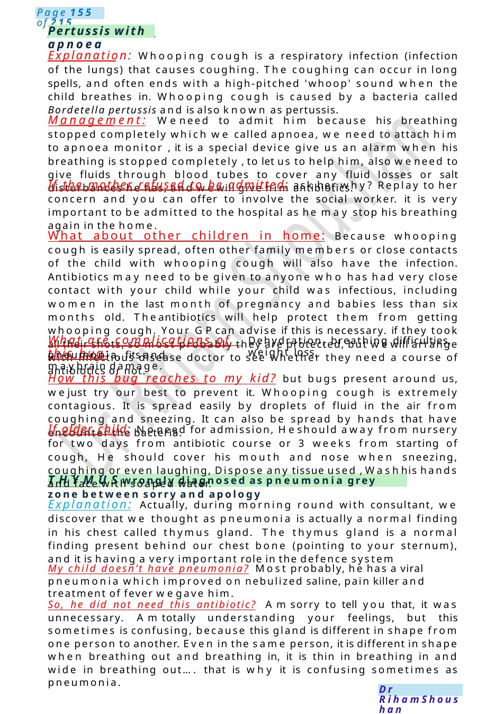
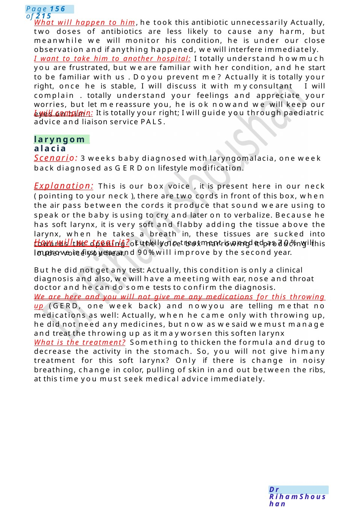

Pertussis with apnoea
THYMUSwrongly diagnosed as pneumonia grey zone between sorry and apology Explanation: Whooping cough is a respiratory infection (infection of the lungs) that causes coughing. The coughing can occur in long spells, and often ends with a high-pitched 'whoop' sound when the child breathes in. Whooping cough is caused by a bacteria called Bordetella pertussis and is also known as pertussis.
Scenario Summary
THYMUSwrongly diagnosed as pneumonia grey zone between sorry and apology Explanation: Whooping cough is a respiratory infection (infection of the lungs) that causes coughing. The coughing can occur in long spells, and often ends with a high-pitched 'whoop' sound when the child breathes in. Whooping cough is caused by a bacteria called Bordetella pertussis and is also known as pertussis.
Full Original Scenario

Pertussis with apnoea
THYMUSwrongly diagnosed as pneumonia grey zone between sorry and apology
Explanation: Whooping cough is a respiratory infection (infection of the lungs) that causes coughing. The coughing can occur in long spells, and often ends with a high-pitched 'whoop' sound when the child breathes in. Whooping cough is caused by a bacteria called Bordetella pertussis and is also known as pertussis.
Management: Weneed to admit him because his breathing stopped completely which we called apnoea, we need to attach him to apnoea monitor , it is a special device give us an alarm when his breathing is stopped completely , to let us to help him, also weneed to give fluids through blood tubes to cover any fluid losses or salt disturbances he has, and wewill give him antibiotics.
If the mother refused to be admitted: ask her why? Replay to her concern and you can offer to involve the social worker. it is very important to be admitted to the hospital as he may stop his breathing again in the home.
What about other children in home: Because whooping cough is easily spread, often other family members or close contacts of the child with whooping cough will also have the infection. Antibiotics may need to be given to anyone who has had very close contact with your child while your child was infectious, including women in the last month of pregnancy and babies less than six months old. Theantibiotics will help protect them from getting whooping cough. Your GPcan advise if this is necessary. if they took all their shots, so most probably they are protected, but wewill arrange with infectious disease doctor to see whether they need a course of antibiotics or not.
What are complications of this bug:
Dehydration, breathing difficulties, weight loss,
pneumonia, fits and maybrain damage.
How this bug reaches to my kid? but bugs present around us, wejust try our best to prevent it. Whooping cough is extremely contagious. It is spread easily by droplets of fluid in the air from coughing and sneezing. It can also be spread by hands that have encounter the bacteria.
If older child: Noneed for admission, Heshould away from nursery for two days from antibiotic course or 3 weeks from starting of cough, He should cover his mouth and nose when sneezing, coughing or even laughing, Dispose any tissue used , Washhis hands and face with soaped water.
Explanation: Actually, during morning round with consultant, we discover that we thought as pneumonia is actually a normal finding in his chest called thymus gland. The thymus gland is a normal finding present behind our chest bone (pointing to your sternum), and it is having a very important role in the defence system
My child doesn’t have pneumonia? Most probably, he has a viral pneumonia which improved on nebulized saline, pain killer and treatment of fever wegave him.
So, he did not need this antibiotic? Amsorry to tell you that, it was unnecessary. Amtotally understanding your feelings, but this sometimes is confusing, because this gland is different in shape from one person to another. Even in the same person, it is different in shape when breathing out and breathing in, it is thin in breathing in and wide in breathing out.... that is why it is confusing sometimes as pneumonia.

laryngomalacia
What will happen to him, he took this antibiotic unnecessarily Actually, two doses of antibiotics are less likely to cause any harm, but meanwhile we will monitor his condition, he is under our close observation and if anything happened, wewill interfere immediately.
I want to take him to another hospital: I totally understand howmuch you are frustrated, but we are familiar with her condition, and he start to be familiar with us . Doyou prevent me? Actually it is totally your right, once he is stable, I will discuss it with myconsultant I will complain . totally understand your feelings and appreciate your worries, but let mereassure you, he is ok nowand we will keep our eyes on him .
I will complain: It is totally your right; I will guide you through paediatric advice and liaison service PALS.
Scenario: 3 weeks baby diagnosed with laryngomalacia, one week back diagnosed as GERDon lifestyle modification.
Explanation: This is our box voice , it is present here in our neck ( pointing to your neck ), there are two cords in front of this box, when the air pass between the cords it produce that sound we are using to speak or the baby is using to cry and later on to verbalize. Because he has soft larynx, it is very soft and flabby adding the tissue above the larynx, when he takes a breath in, these tissues are sucked into towards the opening of the voice box narrowing it producing this louder voice you hear.
How will we treat it? Luckily no treatment is needed as 70% will improve in first year and 90%will improve by the second year.
But he did not get any test: Actually, this condition is only a clinical diagnosis and also, wewill have a meeting with ear, nose and throat doctor and he can do some tests to confirm the diagnosis.
We are here and you will not give me any medications for this throwing up (GERD, one week back) and nowyou are telling methat no medications as well: Actually, when he came only with throwing up, he did not need any medicines, but now as wesaid wemust manage and treat the throwing up as it mayworsen this soften larynx
What is the treatment? Something to thicken the formula and drug to decrease the activity in the stomach. So, you will not give himany treatment for this soft larynx? Only if there is change in noisy breathing, change in color, pulling of skin in and out between the ribs, at this time you must seek medical advice immediately.